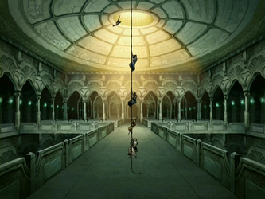
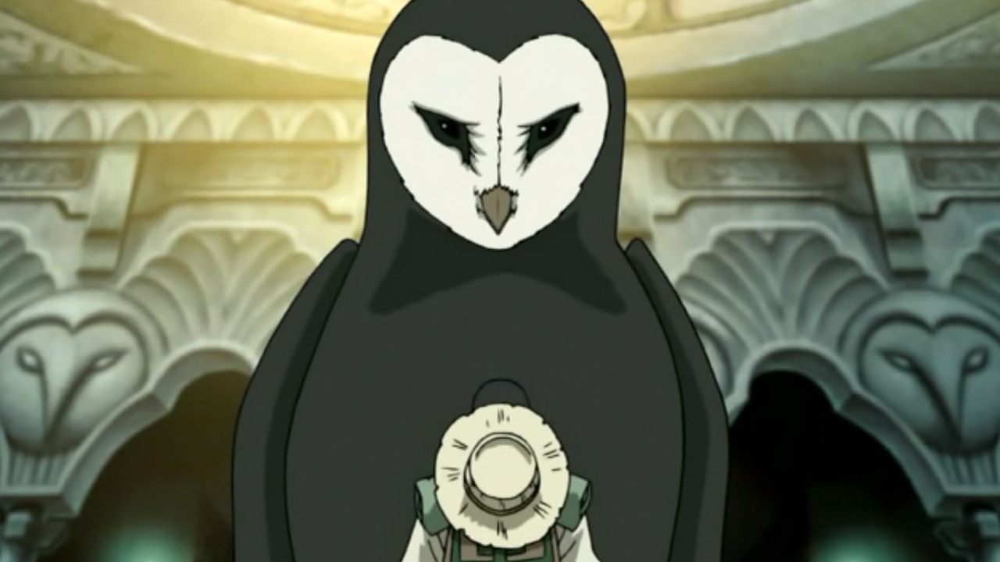

For years, you had spent your life traveling around the Earth Kingdom with your Sabertooth Moose Lion. You enjoyed exploring and learning about the world. You had met the people of Kyoshi Island, lived for years in Ba Sing Se, and even met hippies cliaming to be nomads too. However there was one place you had always wanted to go that was very difficult to get to: Wan Shi Tong's Library. The library was an enormous library that was once located in the Spirit World, but is supposedly now accessible to humans. The library was considered to be very difficult to locate, as it was almost completely buried under desert sand. Wan Shi Tong, an owl spirit, built the library with the intention of preserving all the knowledge of the world. It held a vast, ancient collection of books, gathered by Knowledge Seeker spirits and at one point in time, the library was accessible to humans, as Wan Shi Tong hoped they would benefit from the vast amount of information. You being a lover of learning had an enromous desire to visit the library and read all the books you could and learn as much as possible to share with your family.
After years and years of searching the grate desert of the Earth Kingdom, one day you stumbled across a large tower in the middle of the desert. You did not know what it was but you decided to investigate. You climbed to the top of the tower and entered the structure from the top while your Sabertooth Moose Lion waited patiently for you outside. Once you were inside, you were amazed. You had found the library, and it was bigger than you thought. Books lined the walls and there must have been 8 floors worth of book cases. Once you landed on the first level, you were greeted by the owl spirit Wan Shi Tong. He told you that you are welcome to browse his collection if you first shared a piece of knowledge with him. You can him maps that you created on your journey across the Earth Kingdom. He accepted them and allowed you to wander the library. Your dream of finding the library had come to fruition. You felt as if you could spend an enternity in there.
|  |  |